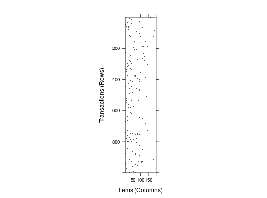
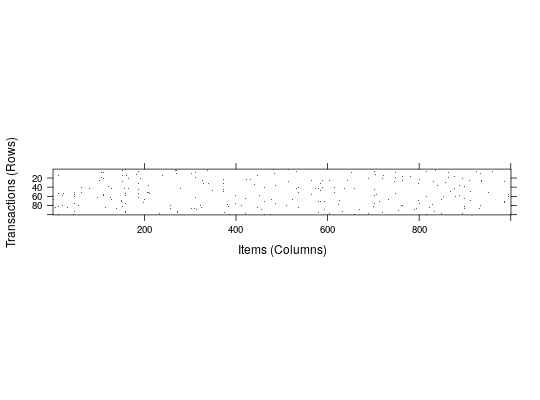
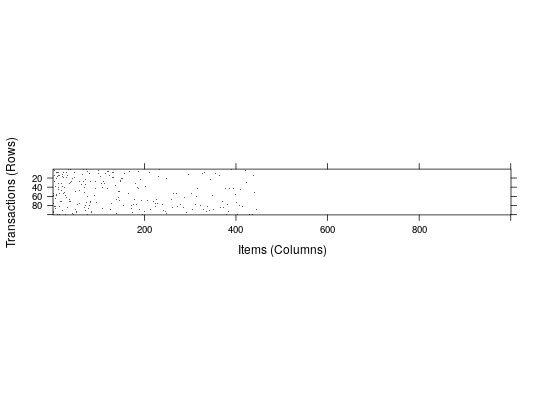

Simulates a random transactions object using different
methods.
random.transactions(nItems, nTrans, method = "independent", …, verbose = FALSE)
The function generates a nitems times ntrans
transaction database.
Currently two simulation methods are implemented:
"independent" (see Hahsler et al., 2006)lambda can
be specified (defaults to 3). Note that one subtracted from lambda
and added to the size to avoid
empty transactions. The items in the transactions are randomly
chosen using the numeric probability
vector iProb of length nItems
(default: 0.01 for each item).
"agrawal" (see Agrawal and Srikant, 1994)The simulation is a two-stage process. First, a set of
nPats patterns
(potential maximal frequent itemsets) is generated.
The length of the patterns is Poisson distributed with mean
lPats and consecutive patterns share some items controlled by
the correlation parameter corr.
For later use, for each pattern a pattern weight is
generated by drawing
from an exponential distribution with a mean of 1 and
a corruption level is chosen from a normal distribution
with mean cmean and variance cvar.
The patterns are created using the following function:
random.patterns(nItems, nPats = 2000, method = "agrawal", lPats = 4, corr = 0.5, cmean = 0.5, cvar = 0.1, iWeight = NULL, verbose = FALSE)
The function returns the patterns as an itemsets objects which can
be supplied to random.transactions as the argument patterns.
If no argument patterns is supplied, the default values given above
are used.
In the second step, the transactions are generated using the patterns.
The length the transactions follows a Poisson
distribution with mean lPats. For each transaction, patterns are
randomly chosen using the pattern weights till the transaction length
is reached. For each chosen
pattern, the associated corruption level is used to drop some
items before adding the pattern to the transaction.
Returns an object of class
transactions.
Michael Hahsler, Kurt Hornik, and Thomas Reutterer (2006). Implications of probabilistic data modeling for mining association rules. In M. Spiliopoulou, R. Kruse, C. Borgelt, A. Nuernberger, and W. Gaul, editors, From Data and Information Analysis to Knowledge Engineering, Studies in Classification, Data Analysis, and Knowledge Organization, pages 598--605. Springer-Verlag.
Rakesh Agrawal and Ramakrishnan Srikant (1994). Fast algorithms for mining association rules in large databases. In Jorge B. Bocca, Matthias Jarke, and Carlo Zaniolo, editors, Proceedings of the 20th International Conference on Very Large Data Bases, VLDB, pages 487--499, Santiago, Chile.
## generate random 1000 transactions for 200 items with ## a success probability decreasing from 0.2 to 0.0001 ## using the method described in Hahsler et al. (2006). trans <- random.transactions(nItems = 200, nTrans = 1000, lambda = 5, iProb = seq(0.2,0.0001, length=200)) ## size distribution summary(size(trans))#> Min. 1st Qu. Median Mean 3rd Qu. Max. #> 1.00 4.00 5.00 5.05 6.00 14.00## use the method by Agrawal and Srikant (1994) to simulate transactions ## which contains correlated items. This should create data similar to ## T10I4D100K (we just create 100 transactions here to speed things up). patterns <- random.patterns(nItems = 1000) summary(patterns)#> set of 2000 itemsets #> #> most frequent items: #> item159 item303 item699 item195 item128 (Other) #> 68 57 54 49 46 7832 #> #> element (itemset/transaction) length distribution:sizes #> 1 2 3 4 5 6 7 8 9 10 11 #> 100 278 426 469 358 194 100 47 18 6 4 #> #> Min. 1st Qu. Median Mean 3rd Qu. Max. #> 1.000 3.000 4.000 4.053 5.000 11.000 #> #> summary of quality measures: #> pWeights pCorrupts #> Min. :2.900e-08 Min. :0.0000 #> 1st Qu.:1.569e-04 1st Qu.:0.2896 #> Median :3.398e-04 Median :0.5013 #> Mean :5.000e-04 Mean :0.5010 #> 3rd Qu.:6.755e-04 3rd Qu.:0.7089 #> Max. :3.830e-03 Max. :1.0000 #> #> includes transaction ID lists: FALSEtrans2 <- random.transactions(nItems = 1000, nTrans = 100, method = "agrawal", patterns = patterns) image(trans2)## plot data with items ordered by item frequency image(trans2[,order(itemFrequency(trans2), decreasing=TRUE)])